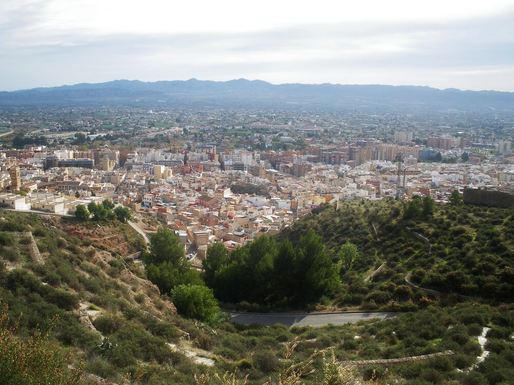
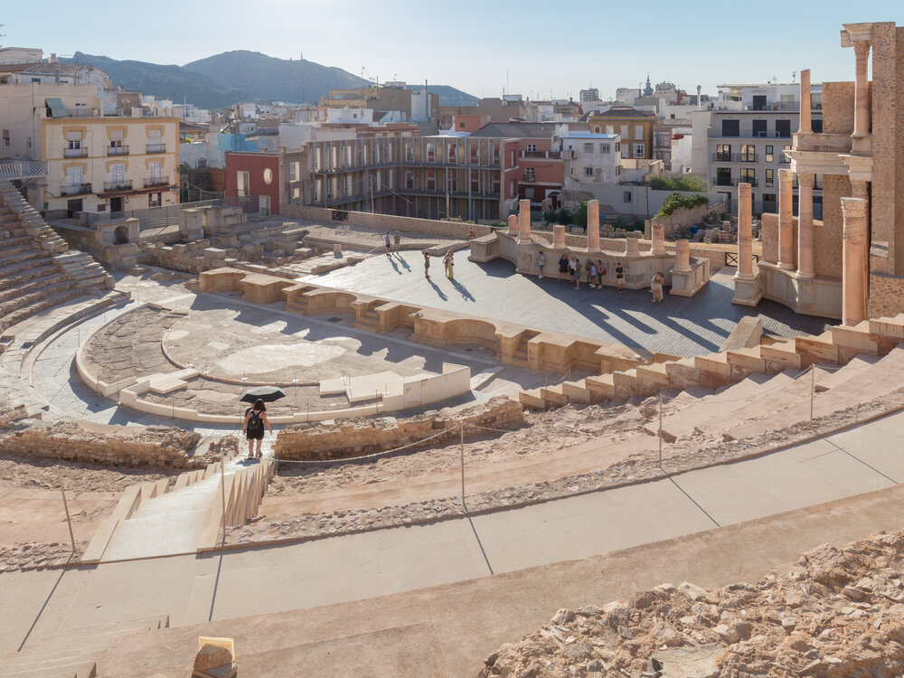
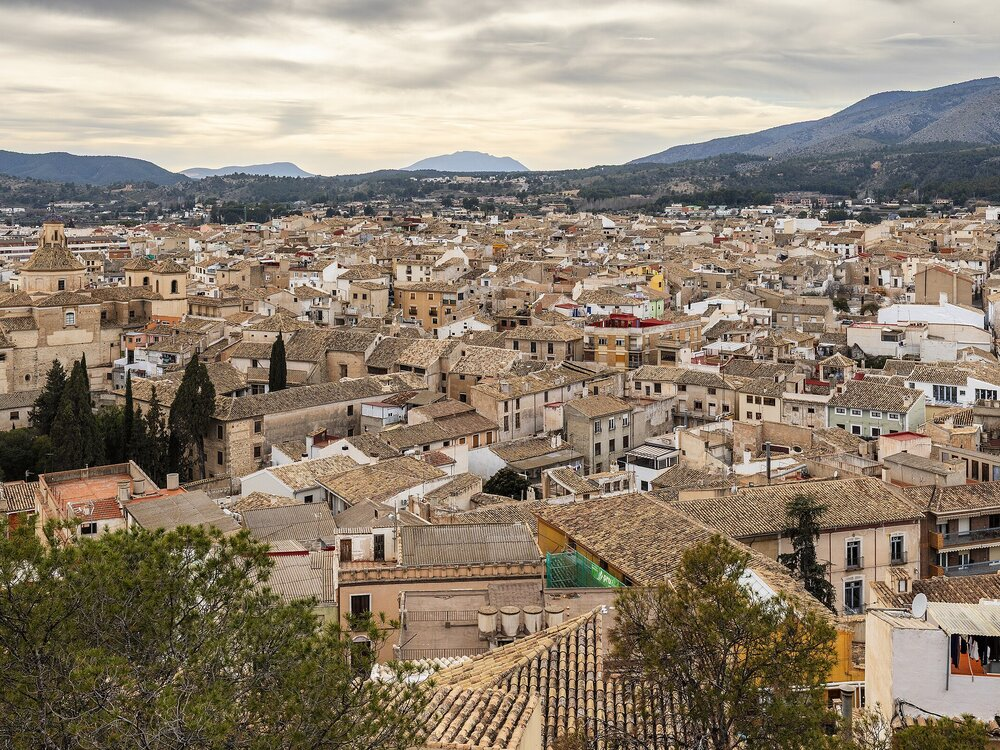
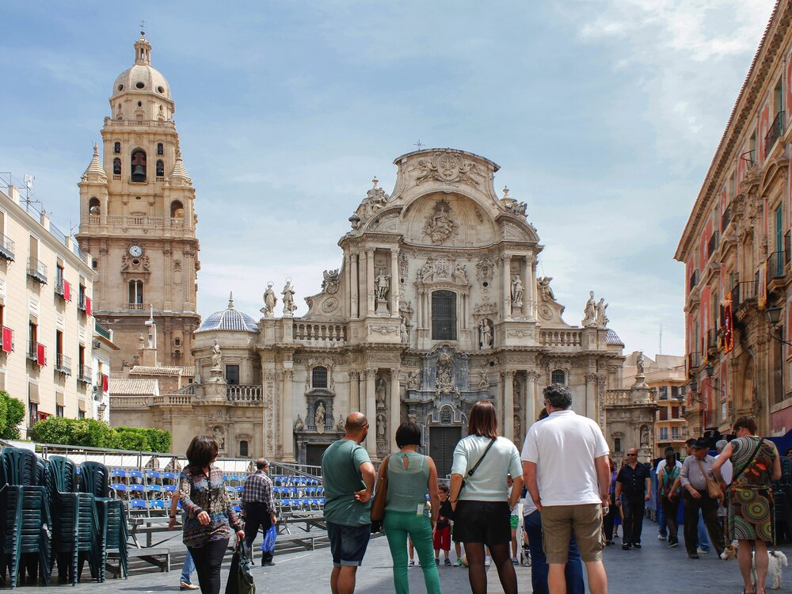
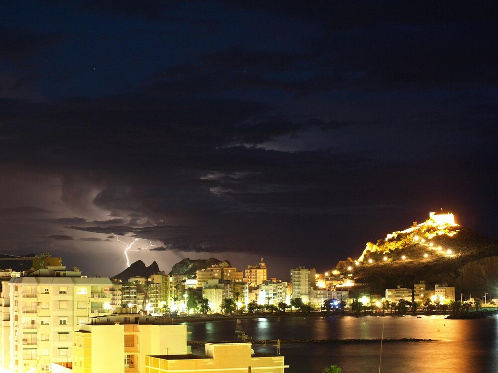
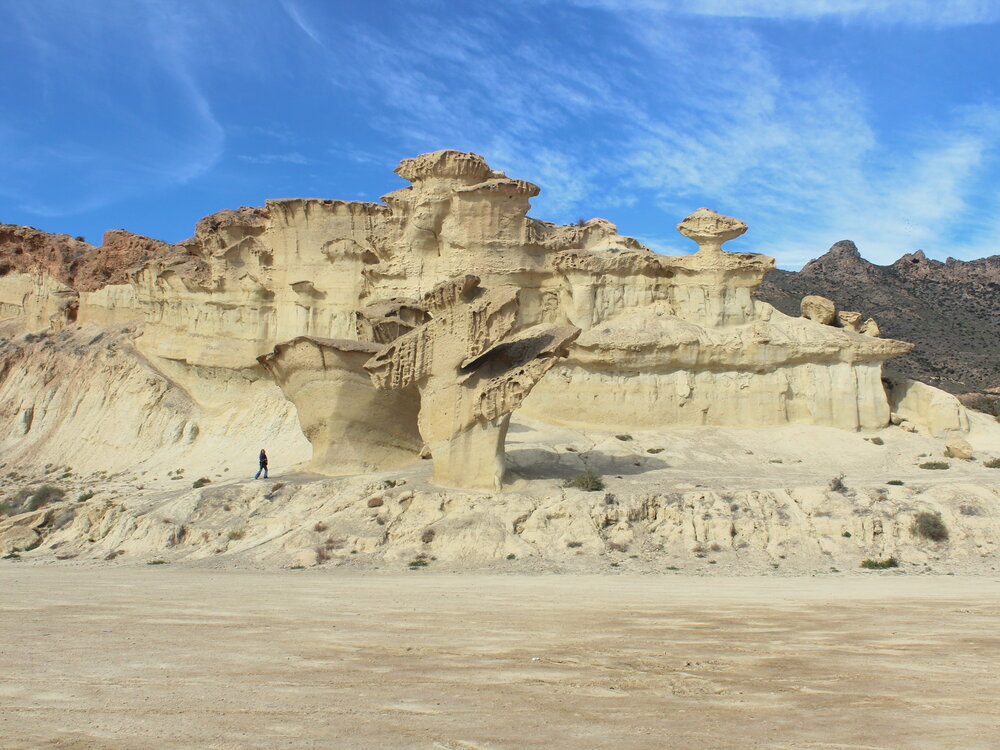
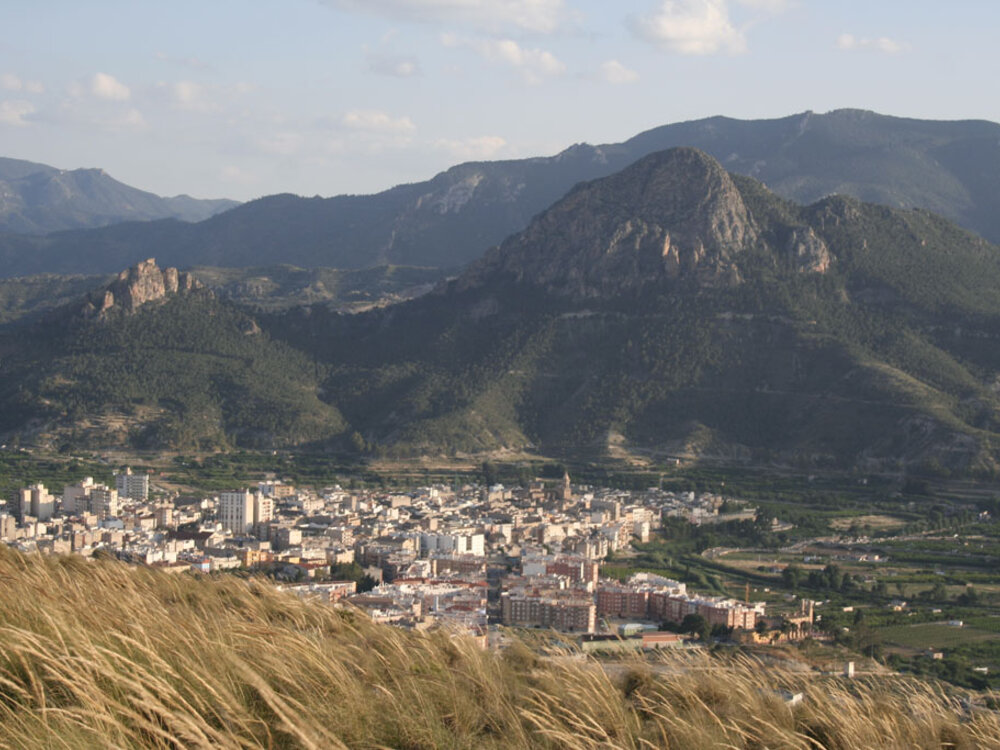
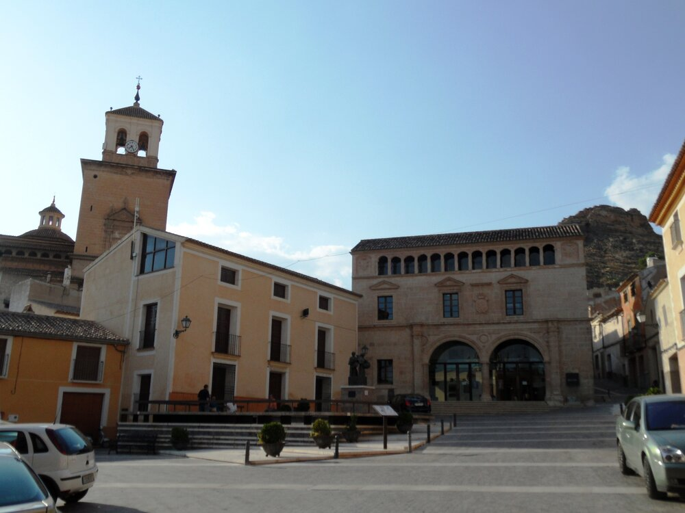

Cultura · Interior
Lorca
Barroco, castillo y una Semana Santa que se vive con devoción y arte en cada calle.
Inspiración · Región de Murcia
Patrimonio barroco, calas turquesa, huerta infinita y vinos de interior. Una galería curada para descubrir los ocho municipios que resumen el carácter murciano.

Galería curada
Del barroco de Lorca a la floración de Cieza: guarda tus planes favoritos y vuelve a ellos cuando quieras.
Cultura · Interior
Barroco, castillo y una Semana Santa que se vive con devoción y arte en cada calle.

Cultura · Costa
Un puerto con 3.000 años de historia, teatro romano y una bahía que enamora al atardecer.

Cultura · Noroeste
La Ciudad Santa del Año Jubilar, con su castillo-santuario y los Caballos del Vino.

Gastronomía · Huerta
La huerta, la Catedral y una forma de comer que convierte cada visita en un ritual.

Costa · Mediterráneo
Calas de agua transparente, castillo y el carnaval más colorido de la costa murciana.

Costa · Bahía
Las Gredas de Bolnuevo, playas tranquilas y una bahía perfecta para bajar el ritmo.

Naturaleza · Vega Alta
La floración más esperada del año y un valle que se tiñe de rosa y blanco cada primavera.

Gastronomía · Altiplano
Viñedos, bodegas y el Monastrell que ha puesto el Altiplano murciano en el mapa del vino.